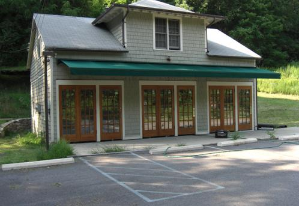
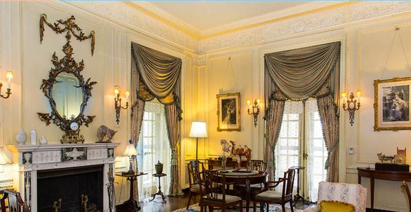
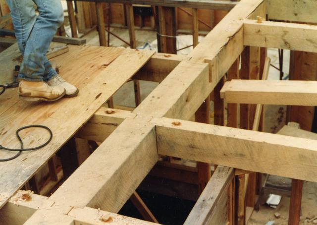
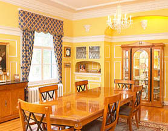
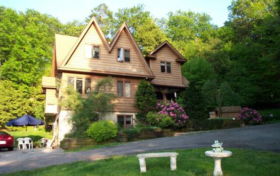

What We Do
Comprehensive construction and restoration expertise built over four decades of hands-on work in the Hudson Valley.

Build
From new homes to commercial spaces, we deliver structurally sound, beautifully finished buildings.

Preserve
We specialize in bringing historic properties back to their original grandeur while meeting modern standards.

Craft
Custom architectural woodwork crafted with traditional joinery and modern precision.

Sustain
Sustainable building practices that protect the environment without compromising quality.

Lead
Full-service project management from initial concept through final walkthrough.
Restore
Rapid response and expert repair to get your property back to its best.